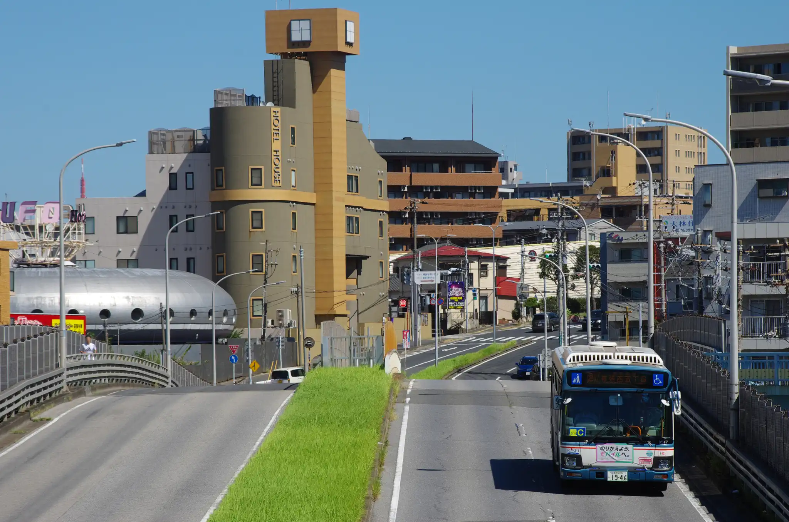

Tweet 京成バス 江戸川営業所 E711 [SS08(シャトル☆セブン)] 東京ディズニーランド-葛西臨海公園駅 E713 [特急] 東京ディズニーランド-東京ディズニーシー E802(BYD K8 2.0) [特急] 東京ディズニーランド-東京ディズニーシー E802(BYD K8 2.0) 新町商店街入口-江戸川スポーツランド E702 [SS07(シャトル☆セブン)] 小岩駅-鹿本小学校 E203 [小73] & E217 [小76] 中の橋-小岩駅 E802(BYD K8 2.0) [小72] 浅間神社-上篠崎 E802(BYD K8 2.0) [小72] 小岩警察・区民館-小岩駅 金町営業所 8159 [金61] 金町ガード脇-金町駅 8185 いちかわ市民まつり無料シャトルバス(2024年) 稲荷木小学校前交差点付近 市川営業所 2232 中山競馬場-東中山駅競馬開催日には中山競馬場と東中山駅を直通する臨時便が運行される。 2231 中山競馬場 2108 [市82急行] じゅん菜池-国府台病院入口 2310 東京メトロ東西線代行輸送(2024年) 新都心営業所 新都心営業所の車両は独自のカモメ塗装をまとっている。また、幕張新都心と幕張本郷駅を結ぶ新都心・幕張線には連節バスが導入されている。 4564 [幕01] 幕張本郷駅-幕張西二丁目 4552 幕張本郷駅-幕張西二丁目 4541 [海11] パティオス入口-海浜幕張駅南口 4492 幕張本郷駅-幕張西二丁目 4401 [海52] 海浜幕張駅-テクノガーデン 4821(メルセデス・ベンツ・シターロ) [幕01] 免許センター-幕張西二丁目 4823(メルセデス・ベンツ・シターロ) [幕01] 幕張本郷駅-幕張西二丁目 4828(メルセデス・ベンツ・シターロ) [幕01] 幕張本郷駅-幕張西二丁目 4829(メルセデス・ベンツ・シターロ) [幕01] NTT-免許センター 4830(メルセデス・ベンツ・シターロ) [幕01] 幕張本郷駅-幕張西二丁目 4831(メルセデス・ベンツ・シターロ) [幕01] 海浜幕張駅-テクノガーデン 4832(メルセデス・ベンツ・シターロ) [幕01急行] 幕張本郷駅-幕張西二丁目 4834(メルセデス・ベンツ・シターロ) [幕01] 海浜幕張駅-テクノガーデン 4835(メルセデス・ベンツ・シターロ) [幕01] 幕張本郷駅-幕張西二丁目 4001(日野・ブルーリボンハイブリッド連節バス) [幕01] 海浜幕張駅-テクノガーデン 4002(日野・ブルーリボンハイブリッド連節バス) [幕01] 幕張本郷駅-幕張西二丁目 4554 西船橋駅 4552 いちかわ市民まつり無料シャトルバス(2024年) 稲荷木小学校前交差点 4536 いちかわ市民まつり無料シャトルバス(2024年) ニッケコルトンプラザ付近 4536 いちかわ市民まつり無料シャトルバス(2024年) ニッケコルトンプラザ付近 松戸営業所 3310 [松11] 松戸二中-南部小T字路 3326 [松11] 松戸二中-南部小T字路 3348 [松11] 松戸駅 3314 [松31] 松戸駅 新都心営業所習志野出張所 0543 [津01] 津田沼駅  0547 [津62] 幕張本郷駅-幕張西二丁目 0564 [津61] 幕張西二丁目 雪の日の津田沼駅 0558 [津62] 習志野きらっと開催による迂回運行(2024年) 0565 [津62] 習志野きらっと開催による迂回運行(2024年) 鷺沼1丁目交差点 0558 [津62] 習志野きらっと開催による迂回運行(2024年) まろにえ橋 千葉営業所 5251 [千03-1] 千葉駅-中央二丁目 5408 東京メトロ東西線代行輸送(2024年) Tweet